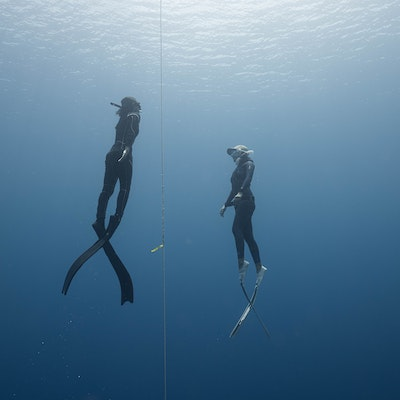

L'école de plongée de l'UCPA propose tous types de stages d'apnée : initiation, formation, exploration.
Ici, pas de recherche de performance, c'est le plaisir d'être sous l'eau à l'écoute de son corps qui prime.
Avec ses installations de pointe, notre centre de formation de Bordeaux vous permet de vous initier ou vous perfectionner à l'apnée dans les meilleures conditions

L’apnée, à condition qu'elle soit encadrée, peut apporter un nombre de bienfaits aussi bien pour le corps que pour l'esprit. Dans un quotidien souvent oppressant, l’apnée est vécue comme une véritable « bulle d’air » par des adeptes, de plus en plus nombreux. L’apnée est le sport idéal pour apprendre à se relaxer et se recentrer. On apprend à se concentrer sur ce que l’on ressent, à décoder et maîtriser des sensations. Pour les plus confirmés, l’apnée peut devenir un mode de vie à part entière et influencer jusqu’à leur alimentation pour une hygiène de vie bien soignée! C’est une discipline idéale pour se détendre, également conseillée pour les personnes qui ont toutes sortes d’appréhensions liées à l’univers aquatique.